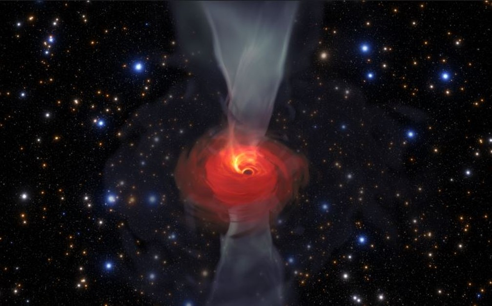
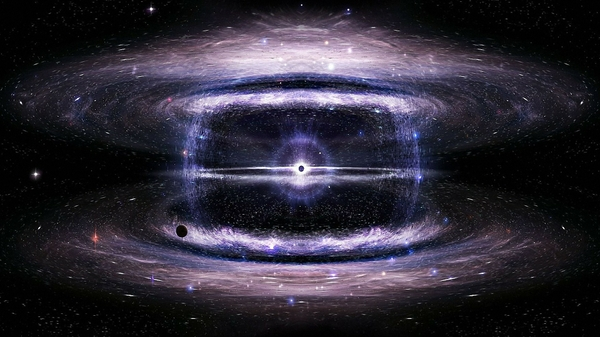
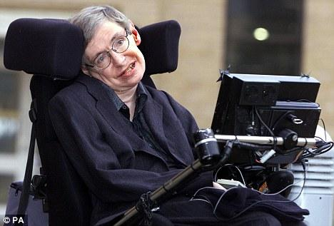

Autor: Luan Francisco Savarese
Astronomia é cultura
|  |
Os buracos negros são uma enorme quantidade de massa concentrada em um espaço muito reduzido. Seu campo gravitacional é tão forte que ele atrai para si tudo o que se aproxima dele, inclusive a luz. |
Como se formam?
|  |
Os buracos negros são formados a partir de colapsos gravitacionais de corpos celestes. Esses fenômenos ocorrem quando a pressão interna de um corpo (geralmente estrelas) é insuficiente para manter sua própria massa. Assim, quando o núcleo da estrela entra em colapso devido à gravidade, o corpo celeste explode liberando enormes quantidades de energia em um evento conhecido como supernova. |
Durante a supernova, em uma fração de segundo, toda a massa da estrela é comprimida em seu núcleo enquanto se move à aproximadamente 1/4 da velocidade da luz (inclusive, é neste exato momento que os elementos mais pesados do universo são criados).
Em seguida, a explosão dará origem a uma estrela de nêutron ou, se a estrela for grande o suficiente, o resultado será a formação de um buraco negro, cuja quantidade astronômica de massa concentrada cria o já mencionado campo gravitacional. Nele, a velocidade de escape (velocidade necessária para que alguma partícula ou radiação resistisse à atração) deve ser, no mínimo, maior que a velocidade da luz.
Qual o tamanho de um buraco negro?
Buracos negros existem em diversos tamanhos. Os menores conhecidos pela ciência são chamados de buracos negros primordiais e acredita-se que possuem o tamanho de um átomo, mas com a massa total de uma montanha.
Os buracos negros medianos (cuja massa é de até 20 vezes a massa total do sol) são chamados de estelares. Nessa categoria, o menor buraco negro descoberto possui 3.8 vezes a massa solar.
Os maiores buracos negros catalogados são chamados de supermassivos, muitas vezes encontrados no centro de galáxias. A título de exemplo, no centro da Via Láctea se encontra o Sagittarius A, um buraco negro com massa equivalente a 4 milhões de vezes a massa do sol.
Até o momento, o maior buraco negro conhecido se chama S50014+81, cuja massa equivale a quarenta bilhões de vezes a massa do sol.
Quais os tipos de buracos negros?
O físico teórico alemão Albert Einstein formulou um conjunto de hipóteses relacionadas à gravitação que serviram como base para o surgimento da física moderna. Esse conjunto de ideias recebeu o nome de Teoria da Relatividade Geral, no qual o cientista fez diversas observações inovadoras acerca dos efeitos gravitacionais dos buracos negros.
Para Einstein, os buracos negros são “deformações no espaço-tempo causadas pela quantidade massiva de matéria concentrada”. Suas teorias promoveram um rápido progresso da área e possibilitaram a classificação dos diferentes tipos de buracos negros:
Buraco negro de Schwarzschild
Os buracos negros de Schwarzschild são aqueles que não possuem carga elétrica e também não possuem impulso angular, ou seja não rotacionam em torno do seu eixo.
Buraco negro de Kerr
Os buracos negros de Kerr não possuem carga elétrica mas rotacionam em torno do seu eixo.
Buraco negro de Reissner-Nordstrom
Os buracos negros de Reissner-Nordstrom possuem carga elétrica mas não rotacionam em torno do seu eixo.
Buraco negro de Kerr-Newman
Os buracos negros de Kerr-Newman possuem carga elétrica e rotacionam em torno do seu eixo.
Em teoria, todos os tipos de buracos negros eventualmente se tornam buracos negros de Schwarzschild (estáticos e sem carga elétrica) quando perdem energia o suficiente e param de rotacionar. Esse fenômeno é conhecido como Processo Penrose. Nesses casos, a única maneira de diferenciar um buraco negro de Schwarzschild de outro é através da medição da sua massa.
Teorias de Stephen Hawking sobre buracos negros
|  |
Stephen Hawking foi um dos mais influentes físicos e cosmólogos dos séculos 20 e 21. Entre suas inúmeras contribuições, Hawking resolveu diversos teoremas propostos por Einstein que contribuíram para a teoria de que o universo teve início em uma singularidade, reforçando ainda mais a chamadaTeoria do Big Bang. |
Primeira imagem de um buraco negro
A primeira imagem de um buraco negro foi divulgada em abril de 2019, em uma conferência em Bruxelas. Foi encontrado, após 2 anos de observação e pesquisa, pelo projeto internacional denominado Event Horizon Telescope (EHT), que reúne quase uma dúzia de radiotelescópios no mundo, da Europa ao Polo Sul.
Na imagem, a única parte visível do buraco negro é o círculo dourado, chamado pelos astrônomos de "event horizon" (horizonte de evento em português) ou "ponto de não-retorno."
Já no centro do horizonte de eventos, se localiza uma densidade de massa incalculável, chamada singularidade. A gravidade desse ponto é tão forte, que nenhum objeto ao redor consegue escapar.
Em teoria, somente algo que se movesse em uma velocidade superior à velocidade da luz conseguiria resistir ao campo gravitacional de um buraco negro. Por esse motivo, não é possível saber ao certo o que acontece com a matéria que é sugada.
O que se vê na imagem é, na verdade, a luz emitida por materiais que circulam ao redor do buraco negro. Essa é a luz captada por telescópios em diferentes partes do mundo. Na prática, seria como usar um enorme telescópio do tamanho da Terra para ver o buraco negro.
Mesmo sem ver o buraco negro, cientistas sabem que ele existe por meio dos efeitos ao seu redor.
|
|
Autor: Luan Francisco Savarese |